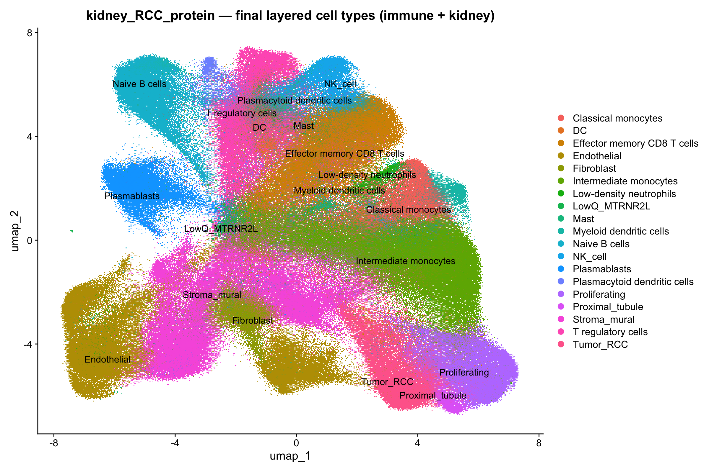

R/config.R, 01, 02) re-points at the full
multimodal section via XENIUM_DATASET=big.gene_panel.json + cell_feature_matrix.h5; confirm immune/B-cell & plasma markers; enumerate control features.01_load_qc.R) — lean LoadXenium (centroids only); Xenium-specific QC from cells.parquet: flag (not filter) negative-control / blank-codeword / segmentation-merge cells; remove only zero-count cells.02_cluster_annotate.R) — LogNormalize (all panel genes as features), PCA/UMAP, native igraph Leiden, marker DE, provisional marker-score annotation.Targeted low-plex assay: per-cell counts are inherently low, so no scRNA-style count hard-filter is applied. QC targets control-probe / blank-codeword rates and segmentation quality instead.
| metric | value |
|---|---|
| dataset | kidney_RCC_protein |
| n_cells_loaded | 465534 |
| n_cells_kept | 465228 |
| median_counts | 70 |
| median_genes | 32 |
| mean_neg_frac | 9.018366e-05 |
| mean_blank_frac | 2.396063e-05 |
| median_cell_area | 57.3936 |
| median_nuc_cyto | 0.4910986 |
| n_flag_neg | 415 |
| n_flag_blank | 92 |
| n_flag_seg_merge | 3337 |
| n_flag_lowq | 17620 |
| mean_mtrnr2l_frac | 0.002194542 |
| median_complexity | 0.4482759 |
| seg_merge_count_thr | 649 |
| seg_merge_area_thr | 419.6673 |
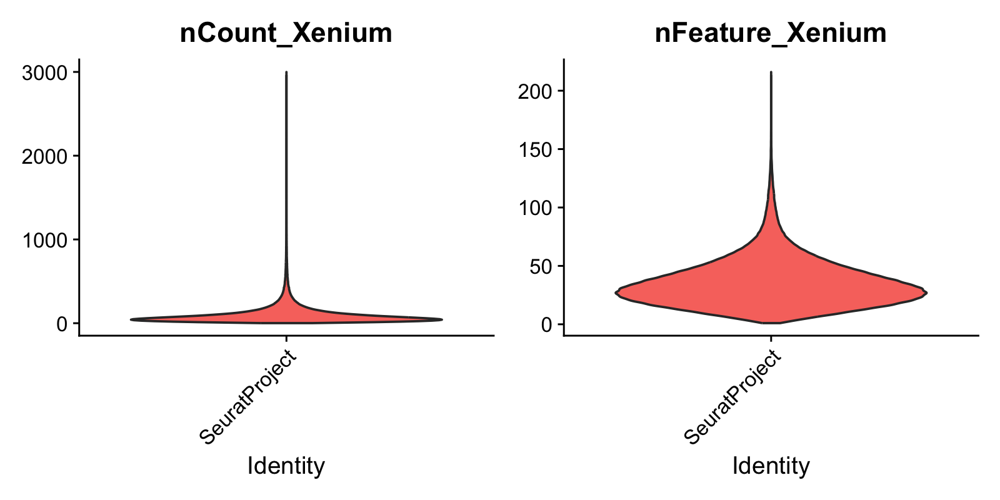
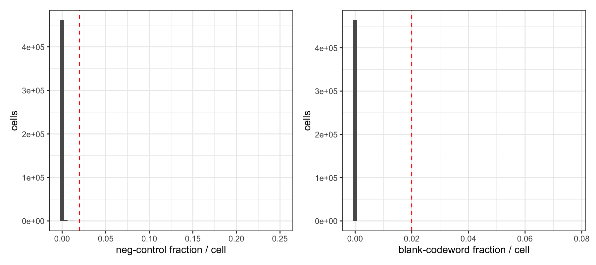
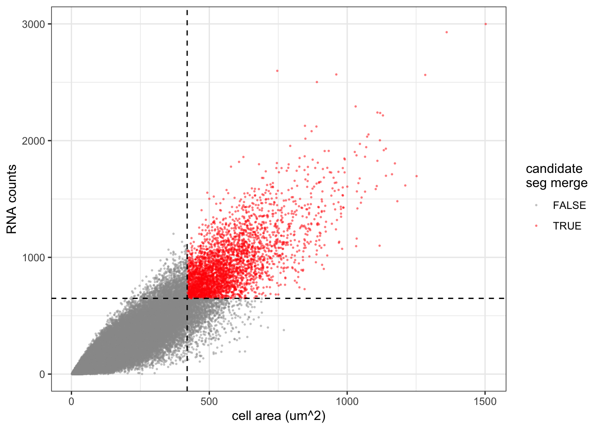
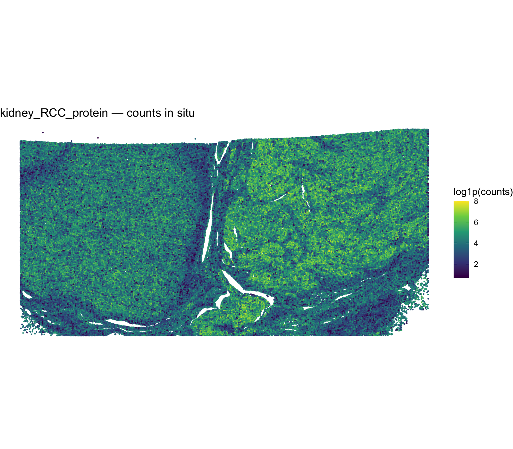
28 Leiden clusters (resolution 0.8, igraph modularity; sub-threshold clusters merged so there are no singletons). Cell-type labels below are provisional — a z-scored marker-set argmax, pending reference-based label transfer.
| cluster | provisional_type | n_cells | top_markers (avg_log2FC) |
|---|---|---|---|
| 1 | Myeloid | 5.38e+04 | TREM2, HAMP, VSIG4, FCGR3A, LILRB4 |
| 2 | T_cell | 4.69e+04 | LAG3, NKG7, GZMA, PDCD1, GZMK |
| 3 | Stroma_mural | 3.03e+04 | SFRP4, PDGFRA, THBS2, LTBP2, C7 |
| 4 | Proliferating | 2.79e+04 | EGFR, CDH16, CXCL6, MET, LGI4 |
| 5 | Stroma_mural | 2.67e+04 | HIGD1B, STEAP4, ASPN, PDGFRB, GEM |
| 6 | B_cell | 2.65e+04 | MS4A1, CD19, BANK1, TCL1A, CD1C |
| 7 | Endothelial | 2.62e+04 | CLEC14A, CD34, BTNL9, ADGRL4, MCF2L |
| 8 | Tumor_RCC | 2.61e+04 | C5orf46, EDN1, CDH2, MUC1, SEMA3C |
| 9 | T_cell | 2.51e+04 | IL7R, CCR7, KLRB1, CD28, CCL19 |
| 10 | Plasma | 2.23e+04 | MZB1, TENT5C, TNFRSF17, SDC1, DERL3 |
| 11 | Myeloid | 2.18e+04 | CD300E, FCN1, CLEC10A, PLA2G7, MRC1 |
| 12 | Myeloid | 2.06e+04 | FCGR3A, FCGR3B, CD163, MNDA, FCGR1A |
| 13 | Endothelial | 1.79e+04 | PROX1, BMX, MMRN1, PDPN, CAVIN2 |
| 14 | NK_cell | 1.38e+04 | GNLY, KLRD1, KLRC1, KLRB1, PRF1 |
| 15 | Stroma_mural | 1.21e+04 | DES, MYH11, CNN1, ACTA2, ACTG2 |
| 16 | Stroma_mural | 1.03e+04 | MEDAG, GPC3, TNC, ALDH1A3, LIF |
| 17 | T_cell | 9.74e+03 | FOXP3, CTLA4, TIGIT, RTKN2, CD28 |
| 18 | DC | 8.4e+03 | DNASE1L3, S100B, EHF, MPEG1, IRF8 |
| 19 | Endothelial | 8.34e+03 | SELE, ACKR1, VWF, MMRN2, RAPGEF3 |
| 20 | Proximal_tubule | 5.69e+03 | FXYD2, RBP5, CDH16, PTGDS, PPP1R1A |
| 21 | Neutrophil | 5.22e+03 | S100A12, MCEMP1, AQP9, IL1R2, APOBEC3A |
| 22 | pDC | 5.13e+03 | LILRA4, KRT5, GZMB, PLD4, TCL1A |
| 23 | Mast | 4.34e+03 | KIT, CPA3, IL1RL1, MS4A2, GATA2 |
| 24 | DC | 3.98e+03 | LAMP3, CCR7, CD83, CSF2RA, IL7R |
| 25 | Proliferating | 2.09e+03 | CENPF, UBE2C, TOP2A, MKI67, CDK1 |
| 26 | T_cell | 2.01e+03 | MFAP5, OGN, CD28, IL7R, CD247 |
| 27 | LowQ_MTRNR2L | 1.68e+03 | IGSF6, CD2, MTRNR2L11, ACTG2, CXCR4 |
| 28 | LowQ_MTRNR2L | 162 | VIM, SMYD2, BASP1, TCF4, MTRNR2L11 |
| cell_type | Freq |
|---|---|
| B_cell | 2.65e+04 |
| DC | 1.24e+04 |
| Endothelial | 5.25e+04 |
| LowQ_MTRNR2L | 1.84e+03 |
| Mast | 4.34e+03 |
| Myeloid | 9.62e+04 |
| Neutrophil | 5.22e+03 |
| NK_cell | 1.38e+04 |
| pDC | 5.13e+03 |
| Plasma | 2.23e+04 |
| Proliferating | 3e+04 |
| Proximal_tubule | 5.69e+03 |
| Stroma_mural | 7.94e+04 |
| T_cell | 8.38e+04 |
| Tumor_RCC | 2.61e+04 |
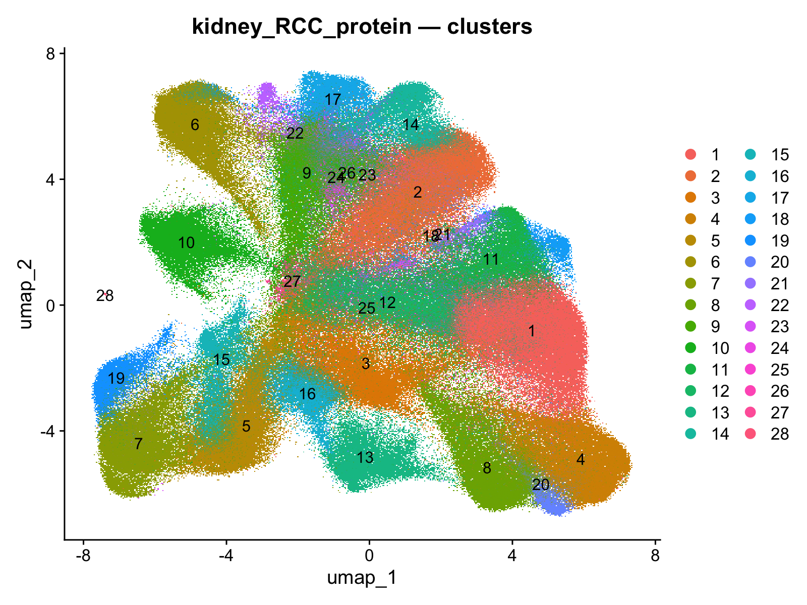
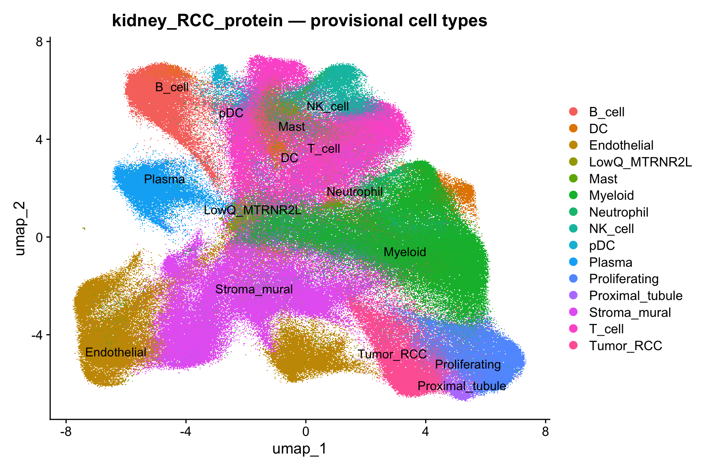
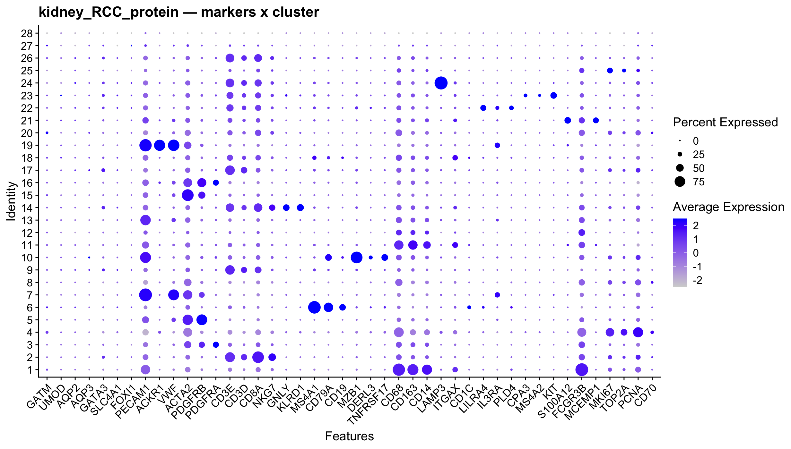
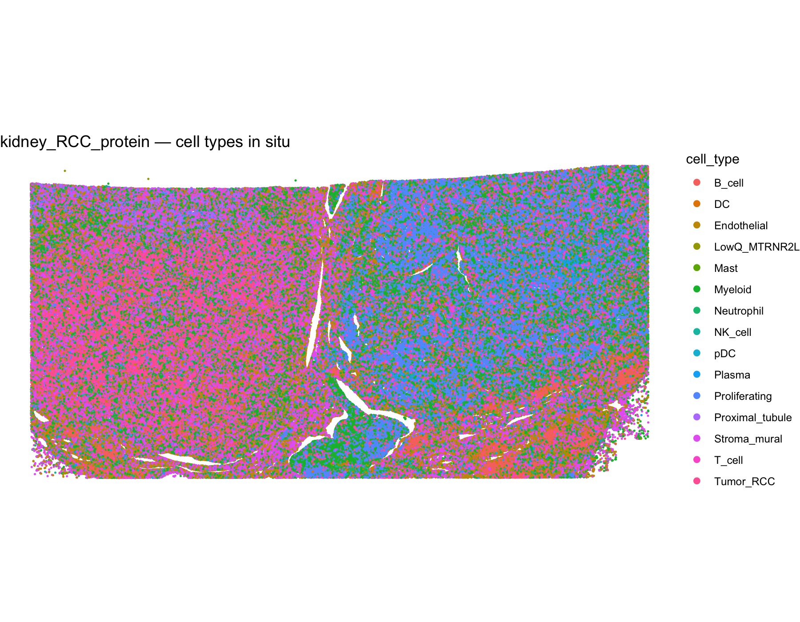
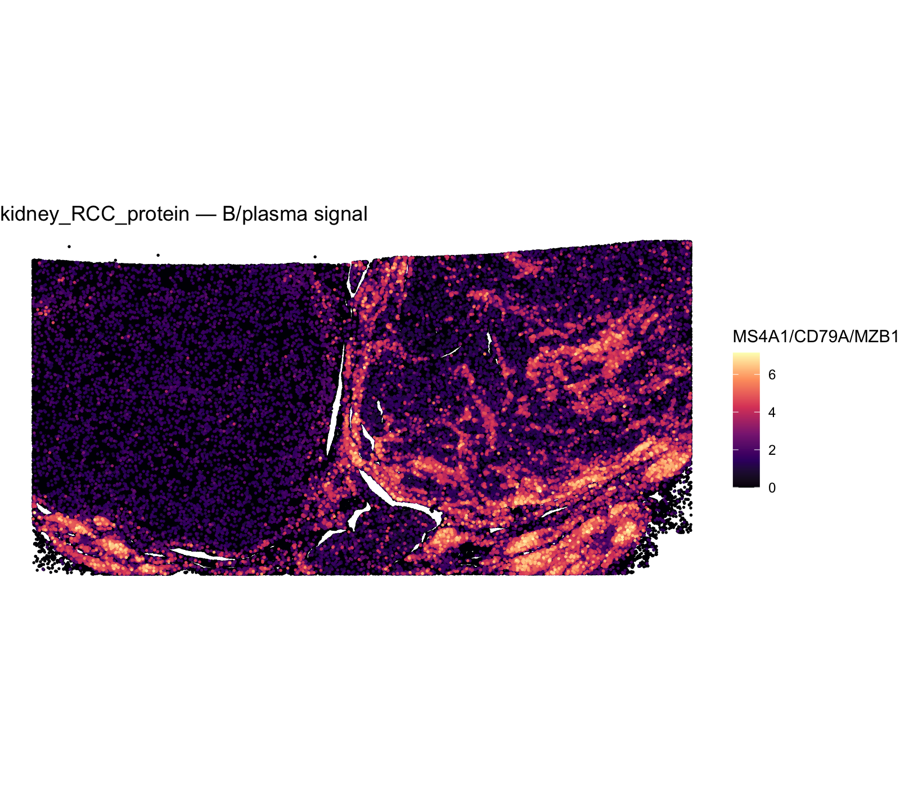
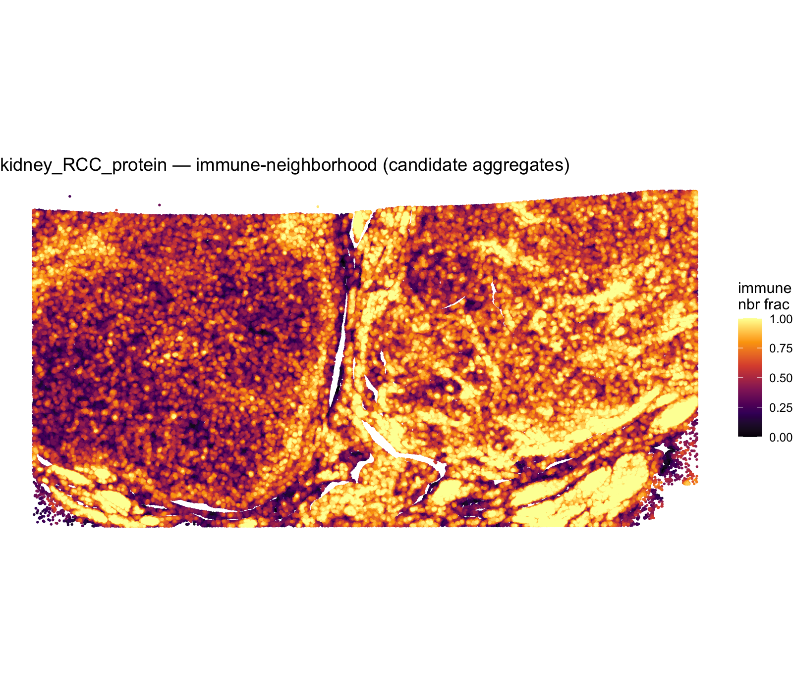
Two reference layers are applied on top of the Leiden clusters and reconciled by per-cluster majority consensus: an immune layer (SingleR vs the celldex Monaco immune reference) and a kidney/epithelial layer (Azimuth mapping onto the KPMP/HuBMAP human-kidney reference). Immune clusters take the Monaco subtype when lineage-concordant; non-immune clusters take the kidney nephron/stroma class; tumour, LowQ and Mast keep their marker labels. Labels are provisional pending review.
| cluster | marker_type | singler_main | singler_fine | fine_agreement | concordant | adopted | ref_cell_type |
|---|---|---|---|---|---|---|---|
| 1 | Myeloid | Monocytes | Intermediate monocytes | 0.519 | TRUE | TRUE | Intermediate monocytes |
| 2 | T_cell | CD8+ T cells | Effector memory CD8 T cells | 0.381 | TRUE | TRUE | Effector memory CD8 T cells |
| 3 | Stroma_mural | Monocytes | Classical monocytes | 0.142 | FALSE | FALSE | Stroma_mural |
| 4 | Proliferating | Progenitors | Progenitor cells | 0.255 | FALSE | FALSE | Proliferating |
| 5 | Stroma_mural | Progenitors | Progenitor cells | 0.309 | FALSE | FALSE | Stroma_mural |
| 6 | B_cell | B cells | Naive B cells | 0.253 | TRUE | TRUE | Naive B cells |
| 7 | Endothelial | Progenitors | Progenitor cells | 0.717 | FALSE | FALSE | Endothelial |
| 8 | Tumor_RCC | Neutrophils | Low-density neutrophils | 0.254 | FALSE | FALSE | Tumor_RCC |
| 9 | T_cell | CD4+ T cells | T regulatory cells | 0.125 | TRUE | TRUE | T regulatory cells |
| 10 | Plasma | B cells | Plasmablasts | 0.727 | TRUE | TRUE | Plasmablasts |
| 11 | Myeloid | Monocytes | Classical monocytes | 0.328 | TRUE | TRUE | Classical monocytes |
| 12 | Myeloid | Monocytes | Intermediate monocytes | 0.327 | TRUE | TRUE | Intermediate monocytes |
| 13 | Endothelial | Progenitors | Progenitor cells | 0.429 | FALSE | FALSE | Endothelial |
| 14 | NK_cell | CD8+ T cells | Effector memory CD8 T cells | 0.201 | FALSE | FALSE | NK_cell |
| 15 | Stroma_mural | Progenitors | Progenitor cells | 0.228 | FALSE | FALSE | Stroma_mural |
| 16 | Stroma_mural | Monocytes | Progenitor cells | 0.221 | FALSE | FALSE | Stroma_mural |
| 17 | T_cell | CD4+ T cells | T regulatory cells | 0.633 | TRUE | TRUE | T regulatory cells |
| 18 | DC | Monocytes | Myeloid dendritic cells | 0.209 | TRUE | TRUE | Myeloid dendritic cells |
| 19 | Endothelial | Progenitors | Progenitor cells | 0.644 | FALSE | FALSE | Endothelial |
| 20 | Proximal_tubule | Monocytes | Progenitor cells | 0.141 | FALSE | FALSE | Proximal_tubule |
| 21 | Neutrophil | Monocytes | Low-density neutrophils | 0.284 | TRUE | TRUE | Low-density neutrophils |
| 22 | pDC | CD4+ T cells | Plasmacytoid dendritic cells | 0.211 | TRUE | TRUE | Plasmacytoid dendritic cells |
| 23 | Mast | CD4+ T cells | Progenitor cells | 0.14 | FALSE | FALSE | Mast |
| 24 | DC | CD4+ T cells | T regulatory cells | 0.201 | FALSE | FALSE | DC |
| 25 | Proliferating | Monocytes | Plasmablasts | 0.156 | FALSE | FALSE | Proliferating |
| 26 | T_cell | CD4+ T cells | Effector memory CD8 T cells | 0.11 | TRUE | TRUE | Effector memory CD8 T cells |
| 27 | LowQ_MTRNR2L | CD4+ T cells | Progenitor cells | 0.106 | FALSE | FALSE | LowQ_MTRNR2L |
| 28 | LowQ_MTRNR2L | B cells | Plasmablasts | 0.778 | FALSE | FALSE | LowQ_MTRNR2L |
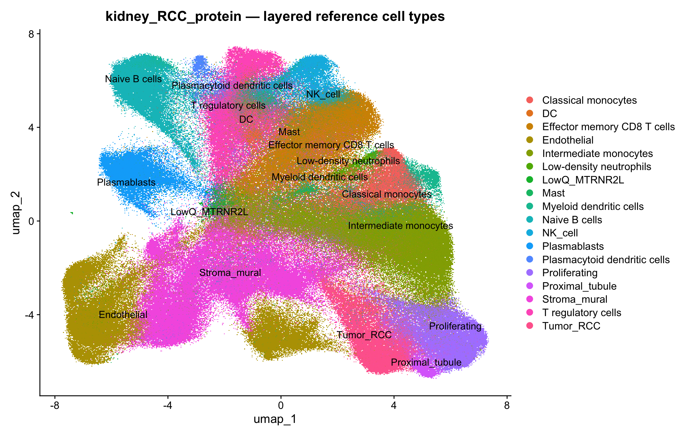
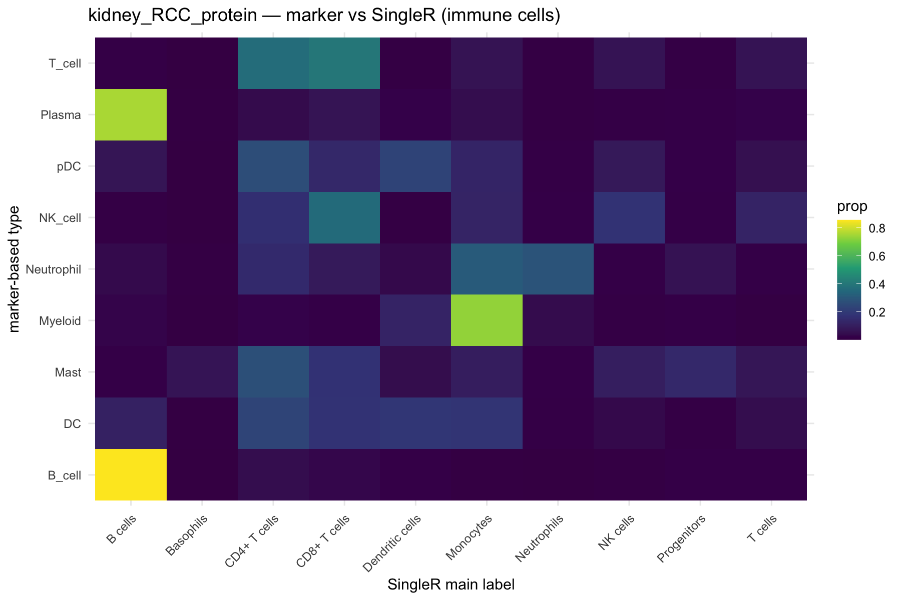
| cluster | marker_type | immune_label | kidney_l1 | kidney_agreement | adopted_kidney | kidney_immune_conflict | final_ref_cell_type |
|---|---|---|---|---|---|---|---|
| 1 | Myeloid | Intermediate monocytes | Immune | 1 | FALSE | FALSE | Intermediate monocytes |
| 2 | T_cell | Effector memory CD8 T cells | Immune | 0.989 | FALSE | FALSE | Effector memory CD8 T cells |
| 3 | Stroma_mural | Stroma_mural | Immune | 0.546 | FALSE | TRUE | Stroma_mural |
| 4 | Proliferating | Proliferating | Immune | 0.862 | FALSE | TRUE | Proliferating |
| 5 | Stroma_mural | Stroma_mural | Vascular Smooth Muscle / Pericyte | 0.418 | FALSE | FALSE | Stroma_mural |
| 6 | B_cell | Naive B cells | Immune | 0.986 | FALSE | FALSE | Naive B cells |
| 7 | Endothelial | Endothelial | Endothelial | 0.948 | TRUE | FALSE | Endothelial |
| 8 | Tumor_RCC | Tumor_RCC | Immune | 0.748 | FALSE | FALSE | Tumor_RCC |
| 9 | T_cell | T regulatory cells | Immune | 0.968 | FALSE | FALSE | T regulatory cells |
| 10 | Plasma | Plasmablasts | Immune | 0.9 | FALSE | FALSE | Plasmablasts |
| 11 | Myeloid | Classical monocytes | Immune | 0.983 | FALSE | FALSE | Classical monocytes |
| 12 | Myeloid | Intermediate monocytes | Immune | 0.947 | FALSE | FALSE | Intermediate monocytes |
| 13 | Endothelial | Endothelial | Immune | 0.503 | FALSE | TRUE | Endothelial |
| 14 | NK_cell | NK_cell | Immune | 0.98 | FALSE | FALSE | NK_cell |
| 15 | Stroma_mural | Stroma_mural | Vascular Smooth Muscle / Pericyte | 0.479 | FALSE | FALSE | Stroma_mural |
| 16 | Stroma_mural | Stroma_mural | Fibroblast | 0.76 | TRUE | FALSE | Fibroblast |
| 17 | T_cell | T regulatory cells | Immune | 0.969 | FALSE | FALSE | T regulatory cells |
| 18 | DC | Myeloid dendritic cells | Immune | 0.977 | FALSE | FALSE | Myeloid dendritic cells |
| 19 | Endothelial | Endothelial | Endothelial | 0.83 | TRUE | FALSE | Endothelial |
| 20 | Proximal_tubule | Proximal_tubule | Immune | 0.841 | FALSE | TRUE | Proximal_tubule |
| 21 | Neutrophil | Low-density neutrophils | Immune | 0.815 | FALSE | FALSE | Low-density neutrophils |
| 22 | pDC | Plasmacytoid dendritic cells | Immune | 0.973 | FALSE | FALSE | Plasmacytoid dendritic cells |
| 23 | Mast | Mast | Immune | 0.91 | FALSE | FALSE | Mast |
| 24 | DC | DC | Immune | 0.985 | FALSE | FALSE | DC |
| 25 | Proliferating | Proliferating | Immune | 0.883 | FALSE | TRUE | Proliferating |
| 26 | T_cell | Effector memory CD8 T cells | Immune | 0.957 | FALSE | FALSE | Effector memory CD8 T cells |
| 27 | LowQ_MTRNR2L | LowQ_MTRNR2L | Immune | 0.546 | FALSE | FALSE | LowQ_MTRNR2L |
| 28 | LowQ_MTRNR2L | LowQ_MTRNR2L | Endothelial | 0.75 | FALSE | FALSE | LowQ_MTRNR2L |
| final_ref_cell_type | Freq |
|---|---|
| Intermediate monocytes | 7.44e+04 |
| Stroma_mural | 6.91e+04 |
| Endothelial | 5.25e+04 |
| Effector memory CD8 T cells | 4.89e+04 |
| T regulatory cells | 3.49e+04 |
| Proliferating | 3e+04 |
| Naive B cells | 2.65e+04 |
| Tumor_RCC | 2.61e+04 |
| Plasmablasts | 2.23e+04 |
| Classical monocytes | 2.18e+04 |
| NK_cell | 1.38e+04 |
| Fibroblast | 1.03e+04 |
| Myeloid dendritic cells | 8.4e+03 |
| Proximal_tubule | 5.69e+03 |
| Low-density neutrophils | 5.22e+03 |
| Plasmacytoid dendritic cells | 5.13e+03 |
| Mast | 4.34e+03 |
| DC | 3.98e+03 |
| LowQ_MTRNR2L | 1.84e+03 |
